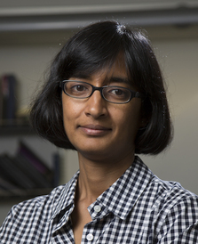

Department of Applied Physics and Department of Chemistry
Columbia University
Columbia University
Latha Venkataraman received her Bachelor's degree in Physics from Massachusetts Institute of
Technology in 1993 where she did her undergraduate thesis with Prof. Mildred Dresselhaus calculating
the phonon
modes
of
carbon nanotubes. She then moved to Harvard University and obtained her Ph. D. in 1999 working under
the
guidance of Prof. Charles Lieber investigating electronic properties of one-dimensional systems. She
worked
as a research scientist at Vytran Corporation from 1999 to 2002. In 2003, she joined Columbia
University
as
a research scientist in the NSF funded Nanoscience and Engineering Center. She started her
independent
career as an assistant professor in the Department of Applied Physics and Applied Mathematics at
Columbia
University in 2007, was promoted to Associate Professor with tenure in 2012 and Professor in 2016.
She is currently Lawrence Gussman Professor of Applied Physics and Professor of Chemistry. Latha
Venkataraman served as Vice Provost for Faculty Affairs from January 2019 through July 2022.
Prominent
awards she has received include the Alexander von Humboldt Research Award, the National Science
Foundation
Career Award, Packard Fellowship for Science and Engineering, and the Alfred P. Sloan Fellowship in
Chemistry. Latha Venkataraman currently serves on the Editorial Advisory Board of the Journal of the
American Chemical Society, Nano Letters and Chemical Science.

Contact: Latha Venkataraman, Department of Applied Physics and
Department of Chemistry, Columbia University.
500 W 120th Street, Rm 200, New York, NY 10027
Phone: 212-854-1786; email: lv2117(at)columbia.edu

500 W 120th Street, Rm 200, New York, NY 10027
Phone: 212-854-1786; email: lv2117(at)columbia.edu